探索C++ string类的c_str()和data()的区别
起因
在学习C++的时候，学到字符串string时，发现一个问题：string的c_str()和data()的作用极其相似。想知道这两个函数有什么区别？于是，去查询了几个靠谱的答案
1 |
|
百度结果
- 网友A：
data只是返回原始数据序列，没有保证会用traits::eos()，或者说'\0'来作字符串结束。当然，可能多数实现都这样做了。c_str是标准的做法，返回的char*。一定指向一个合法的用'\0'终止的C兼容的字符串。所以，如果需要C兼容的字符串，c_str是标准的做法，data并不保证所有STL的实现的一致性。- 原来
c_str()的流程是：先调用terminate()，然后在返回data()。因此如果你对效率要求比较高，而且你的处理又不一定需要以\0的方式结束，你最好选择data()。但是对于一般的C函数中，需要以const char*为输入参数，你就要使用c_str()函数。
- 网友B：
- c_str() 是生成以‘\0’结束的字符串；
- data() 生成的字符串没有‘\0’；
- 网友C：
const char* c_str () const;Get C string equivalent. Generates a null-terminated sequence of characters (c-string) with the same content as the string object and returns it as a pointer to an array of characters. A terminating null character is automatically appended.const char* data() const;Get string data. Returns a pointer to an array of characters with the same content as the string. Notice that no terminating null character is appended (see member c_str for such a functionality).- 像是从某文档查出来的?
- 吃瓜群众A： 两者效果一样，假如data返回的不带
\0的话，那么输出p的时候不会一直输出下去么？(对啊！) - 吃瓜群众B：
c_str必然带‘\0’，至于data要不要带'\0',这个标准没说，可以带也可以不带，就看编译器自己喜欢怎么实现了…… - 吃瓜群众C：没说过
data()返回的一定不能带\0，只是说不要求带。既然前面已经用过c_str(),data()直接使用已经符合条件的数据也是合情合理的。又或者 string 自己预留了空间，本来后面就全是零也说不定…… - 我：那如果是这样子的话，这多出个函数设计出来干嘛用的？c++规范的设计者这么闲的吗？具体到编译器上面是怎么实现的？
编译环境
提出问题后，看了下自己的编译环境：
- gcc : version 8.1.0 (x86_64-posix-seh-rev0, Built by MinGW-W64 project)
- cl.exe :
- 编译器：用于 x86 的 Microsoft ® C/C++ 优化编译器 19.16.27030.1 版
- 链接器：Microsoft ® Incremental Linker Version 14.16.27030.1
上菜
先去康康 g++ 的表现吧。
在程序开头加上getchar(),让我们更容易停下程序下断点。
代码
1 | //assamble |
编译
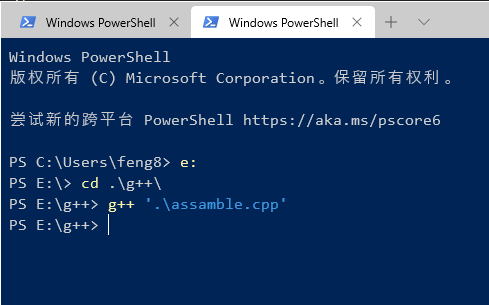
上IDA
选择加载64位PC程序后，结果出来了~
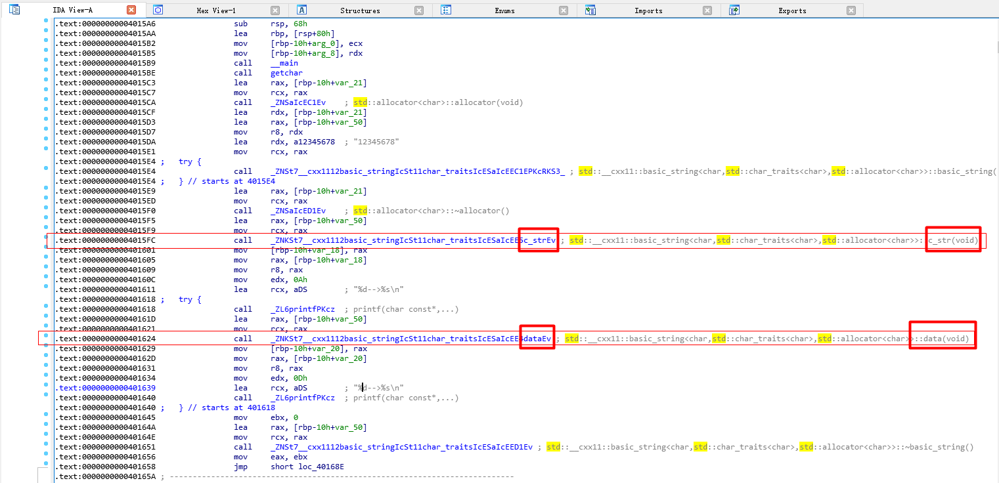
可以看到程序调用了系统的函数c_str()和data()。
可是呢？我们并不知道系统函数做了什么，编译器到底是怎么实现这两个函数的？
我们可以动态调试，康康到底执行了那些命令吧~
上x64dbg
程序跑起来后，停在了程序的EntryPoint。此时，代码控制权在系统领空。
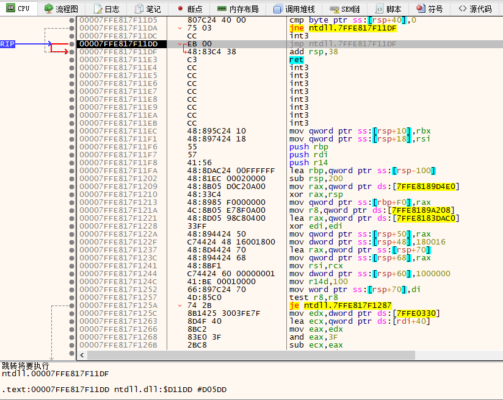
先不管那么多，先跑完一次性断点。
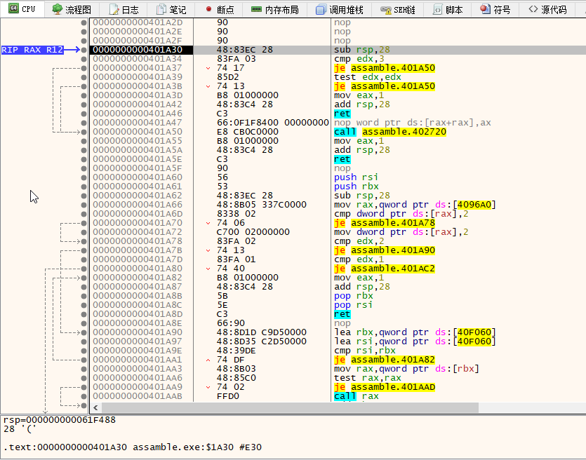
跑完后，我们可以看到，程序已经跑到了程序领空。然后我们继续一路F8，直到找到我们写的getchar。
F8到最后，卡到了一个指令不能往下跑了。
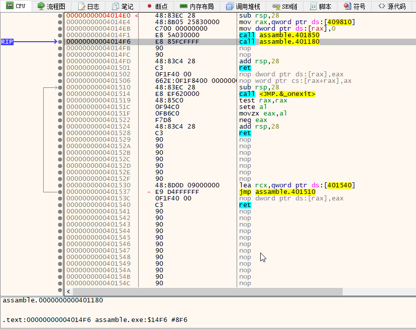
因为程序跑到了getchar()里面了，等待用户输入。
我们随便输入一些东西后回车继续跑~
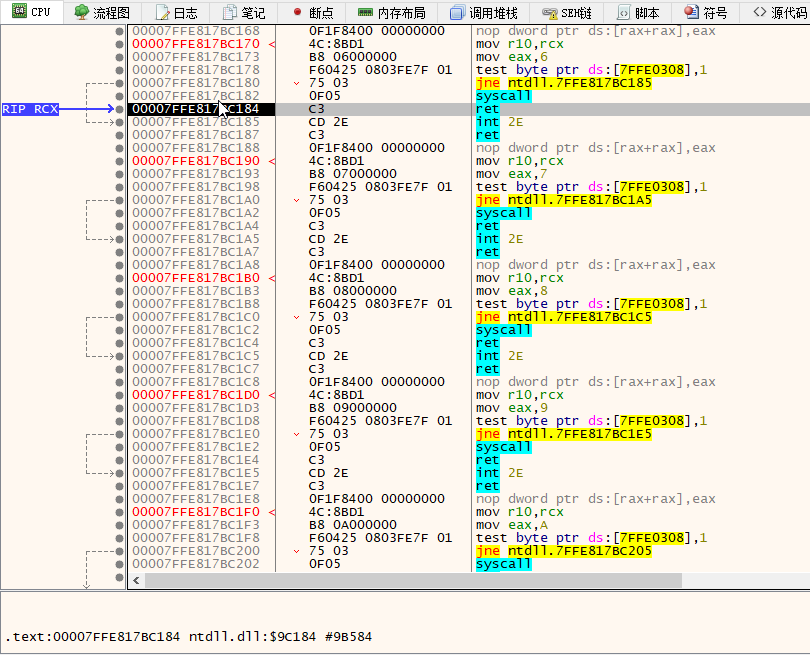
我们回车后，程序跳到了syscall后面，接着是ret返回。说明我们即将跳出getchar()了，我们继续跟进F8。
F8过程中，可以看到调用了ReadFile()~
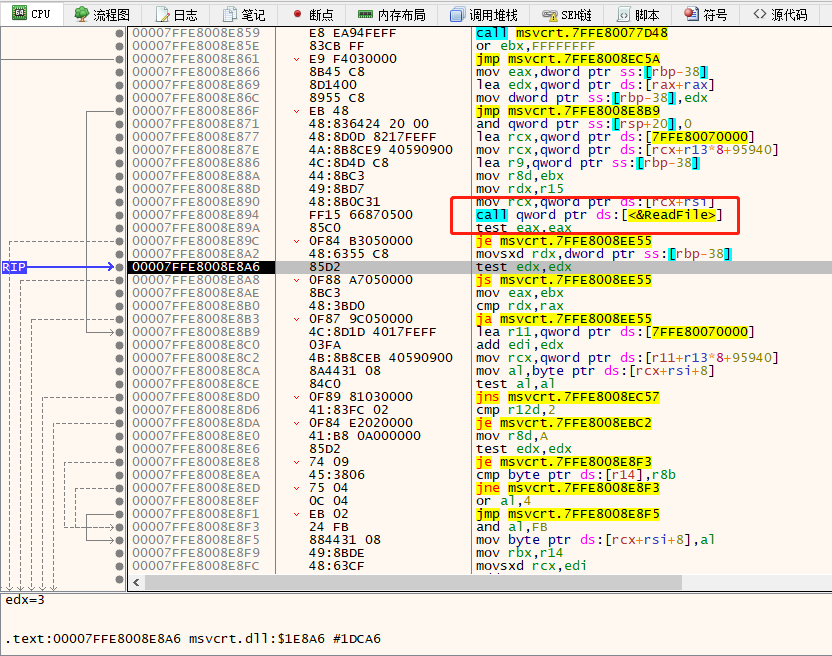
继续F8康康。最后，千辛万苦找到了getchar(),同时，我们看到了期待已久的call:c_str()和data()。跟IDA看到的一模一样。
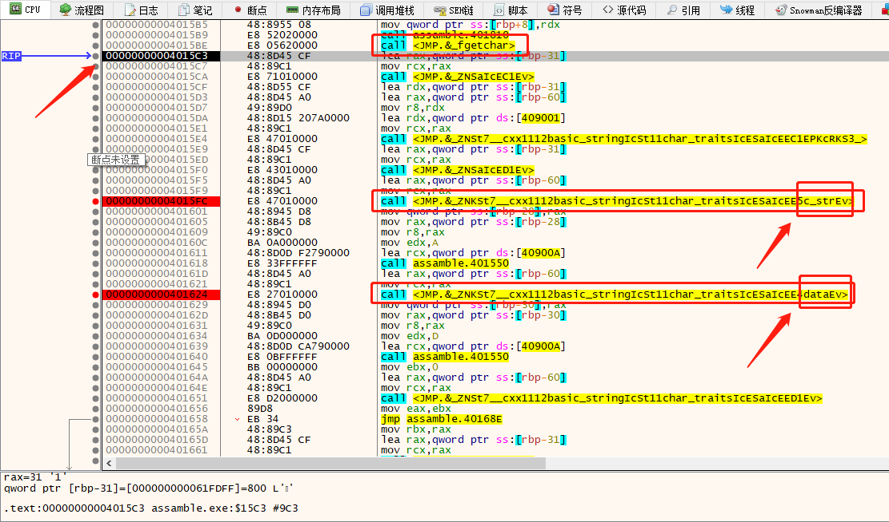
我们记录一下当前的内存地址：00000000004015FC，然后我们F7进去康康系统到底执行了什么？跳到了0000000000401748。
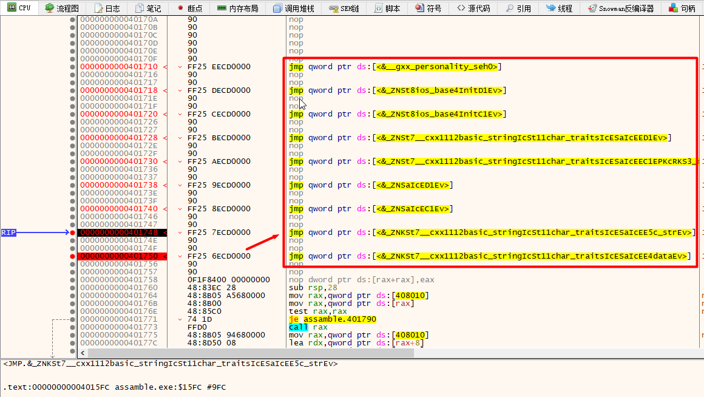
这里看上去，像是一个集中跳转的地方，类似于接口，应用程序通过这里集中调用系统函数或者动态链接库。我们跳过去看看~
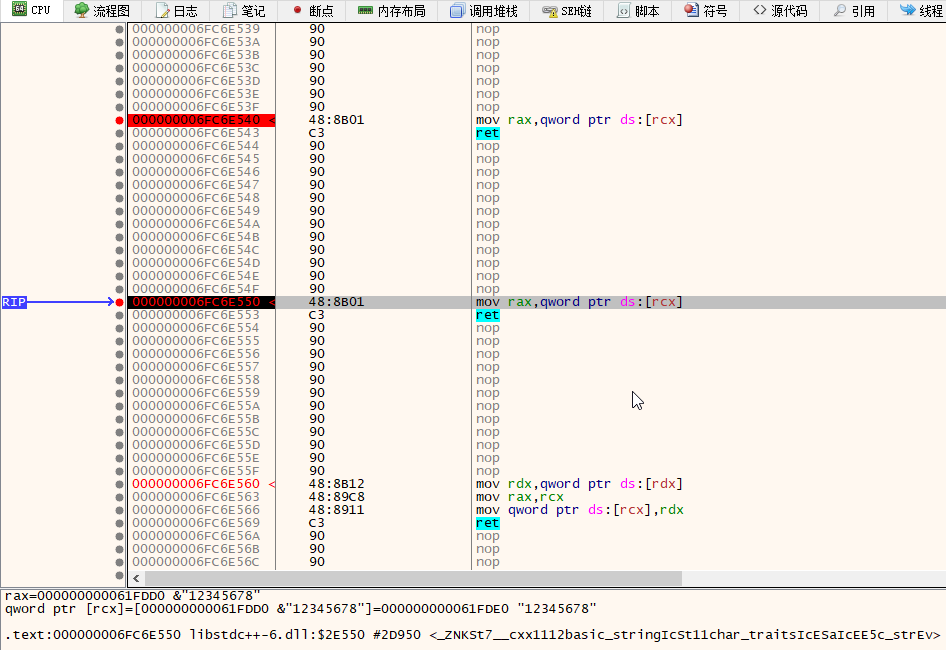
跳到了000000006FC6E550
无语了…就执行了一句mov rax,qword ptr ds:[rcx]就返回。继续F7看看下面的data看看。
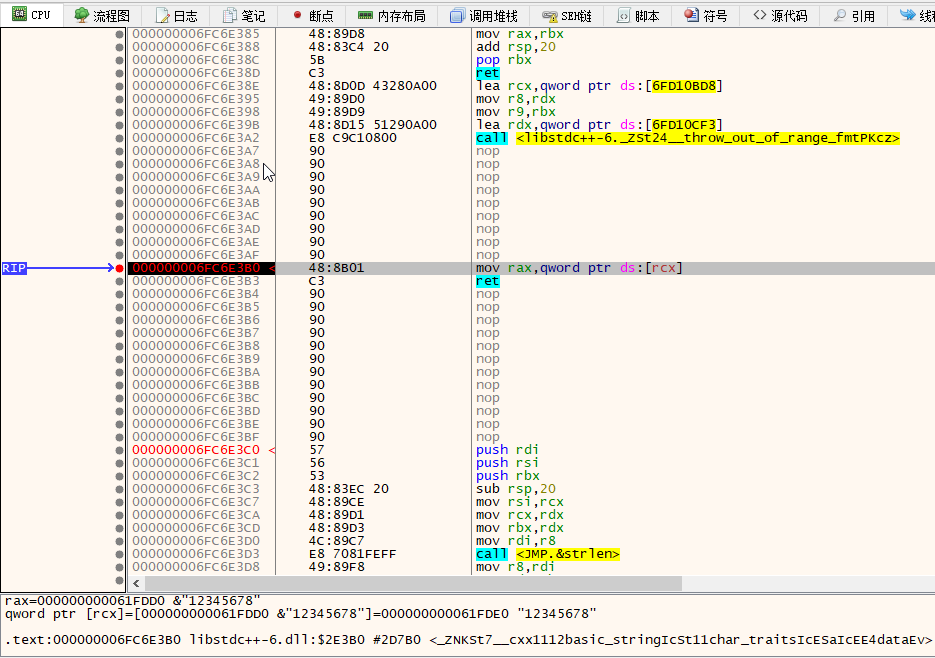
从0000000000401624到0000000000401750到000000006FC6E3B0
发现也是同样一句mov rax,qword ptr ds:[rcx]然后就ret。
这不是都一样的吗？？？
真相大白
你个糟老头子坏得很，到头来两个函数还不是一模一样，鬼才信你的两者区别是返回的char[]有没有后面的\0。
这个两个函数唯一的作用就是mov rax,qword ptr ds:[rcx]。
把在内存数据段偏移地址为rcx所指向的指向四字节整数的指针的值取出来赋值给了寄存器rax。😁而已！
而值就是我们string对应的字符串。
通俗来讲：就是string里面有个指针指向保存着数据的char[]，默认是隐藏的，函数执行了一个根据指针取出字符串的操作。
翻译成C/C++就是&"12345678"。
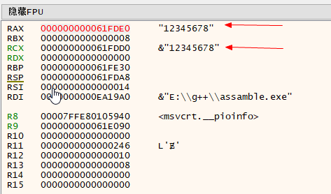
优化
在跟进的过程中，我们发现了一个问题：c_str()和data()都是跳转了2次最终执行了相同的指令。
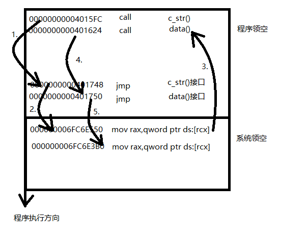
我们是不是可以直接把指令复制过去执行，而省去了跳转的麻烦。
修改汇编代码，直接将两个地方的call改成我们最终执行的指令，多余的字节以nop填充。
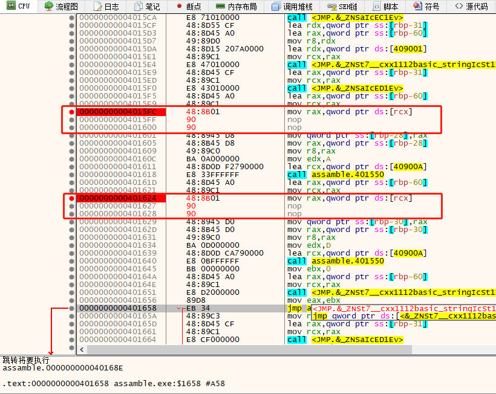
打补丁，修改补丁。保存，重新运行~
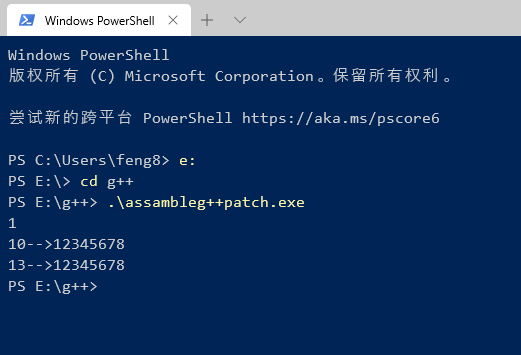
完美运行。我们把6条指令优化成2条指令!将程序运行时间缩短了40纳秒。😂
微软的CL编译器呢？
编译
同样，我们先编译。
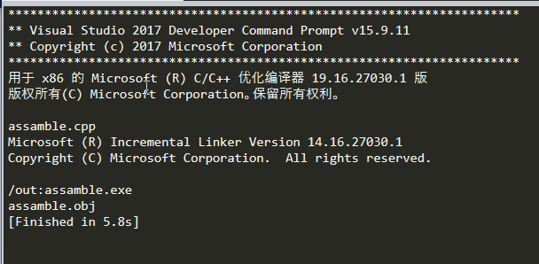
上IDA
上IDA我们发现程序的流程有点乱，这得益于vs2017蜜汁优化。甚至编译后连函数的字符都没有保留。什么东西都看不出来个所以然。
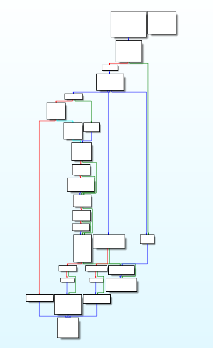
上x64dbg
直接上x64dbg吧。(才发现编译出来的是32位的程序)
国际惯例跑完所有一次性断点，到达程序入口点。
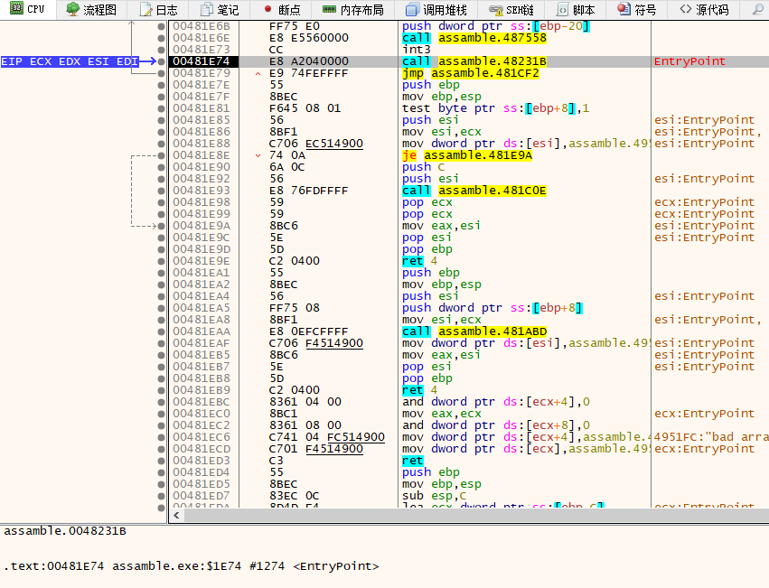
直接运行到getchar(),然后暂停程序。输入一个字符回车。程序暂停在call edx后，接下来是ret。
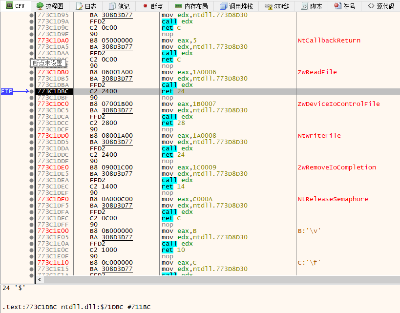
接下来同样看到ReadFile()
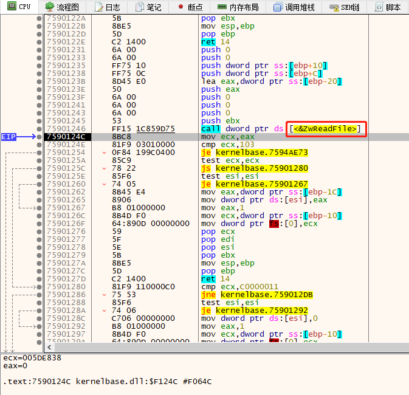
继续F8康康。最后，千辛万苦找到了熟悉的字眼"%d-->%s\n"。
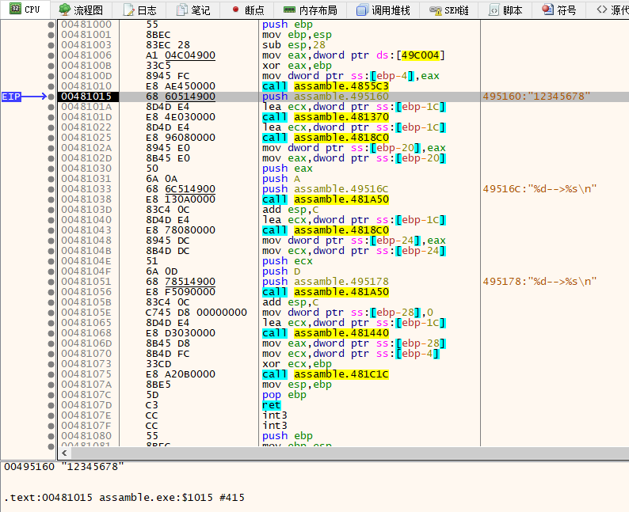
这是我们程序硬编码上去的,编译器无法修改的字符串。
但是由于编译器编译同时，优化删除掉对分析程序有用的信息(函数符号)所以我们并没有看到类似的c_str()和data()。
所以，我们可以根据以往的经验，来猜测每个call的作用。
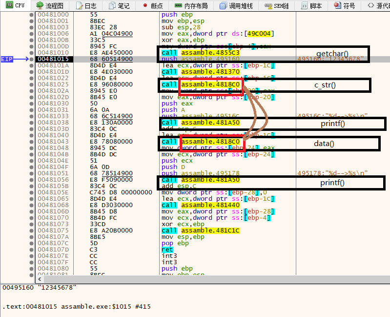
经过猜测分析，我们同样也很容易看到，两个函数都是call assamble.4818C0,说明调用的是同一个函数。
居然优化了两个函数，不再各自调用自己的函数！此处应有掌声！👏👏👏微软牛逼！
不过，我比较好奇的是，里面不再是只有一条指令了。我们进入里面康康内部是怎么实现的。
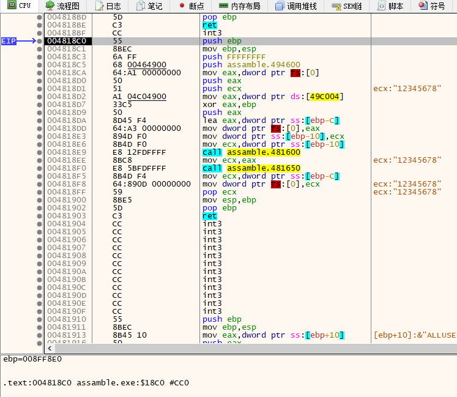
就是这样实现的！具体是怎样的呢？等我学完汇编再康康吧~
最终结论
- 无论是微软的cl.exe 编译器还是 mingw的g++编译器，它们对于
c_str()和data()的实现都是一样一样的。 - 微软的编译器比较智能，会对程序进行汇编级别的优化，这或许在程序员眼中没有任何编码的区别，但是一旦程序代码的量级上来后，这种差别是非常之巨大的。
- 微软编译后把函数符号都去掉了，这点非常好。能有效防止程序被第三方非法篡改。
- 有时间去看看能不能设置cl.exe编译(64位)后再反汇编是怎么样的。